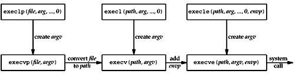

| [ Team LiB ] |
|
4.7 fork and exec FunctionsBefore describing how to write a concurrent server in the next section, we must describe the Unix fork function. This function (including the variants of it provided by some systems) is the only way in Unix to create a new process.
If you have never seen this function before, the hard part in understanding fork is that it is called once but it returns twice. It returns once in the calling process (called the parent) with a return value that is the process ID of the newly created process (the child). It also returns once in the child, with a return value of 0. Hence, the return value tells the process whether it is the parent or the child. The reason fork returns 0 in the child, instead of the parent's process ID, is because a child has only one parent and it can always obtain the parent's process ID by calling getppid. A parent, on the other hand, can have any number of children, and there is no way to obtain the process IDs of its children. If a parent wants to keep track of the process IDs of all its children, it must record the return values from fork. All descriptors open in the parent before the call to fork are shared with the child after fork returns. We will see this feature used by network servers: The parent calls accept and then calls fork. The connected socket is then shared between the parent and child. Normally, the child then reads and writes the connected socket and the parent closes the connected socket. There are two typical uses of fork:
The only way in which an executable program file on disk can be executed by Unix is for an existing process to call one of the six exec functions. (We will often refer generically to "the exec function" when it does not matter which of the six is called.) exec replaces the current process image with the new program file, and this new program normally starts at the main function. The process ID does not change. We refer to the process that calls exec as the calling process and the newly executed program as the new program.
The differences in the six exec functions are: (a) whether the program file to execute is specified by a filename or a pathname; (b) whether the arguments to the new program are listed one by one or referenced through an array of pointers; and (c) whether the environment of the calling process is passed to the new program or whether a new environment is specified.
These functions return to the caller only if an error occurs. Otherwise, control passes to the start of the new program, normally the main function. The relationship among these six functions is shown in Figure 4.12. Normally, only execve is a system call within the kernel and the other five are library functions that call execve. Figure 4.12. Relationship among the six exec functions. Note the following differences among these six functions:
Descriptors open in the process before calling exec normally remain open across the exec. We use the qualifier "normally" because this can be disabled using fcntl to set the FD_CLOEXEC descriptor flag. The inetd server uses this feature, as we will describe in Section 13.5. |
| [ Team LiB ] |
|